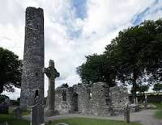

Monasterboice High Cross
In the 5th century, St Buite founded a monastic community near Drogheda in County Louth and today, it is home to an impressive collection of ruins. On the site, visitors can discover an old graveyard, two churches and a sundial.
Monasterboice is most famous for its spectacular high crosses especially the cross of Muineadach an outstanding example of high crosses of the early Christian period, noted as being the tallest in Ireland. It is monolith, 5 metres high, which features many detailed scenes from the Bible. The crosses stand in the shadow of a magnificent Round Tower, about 300 metres high. Monasterboice was a thriving centre of religion and learning until 1142, when the Cistercians arrived at the nearby Mellifont Abbey.